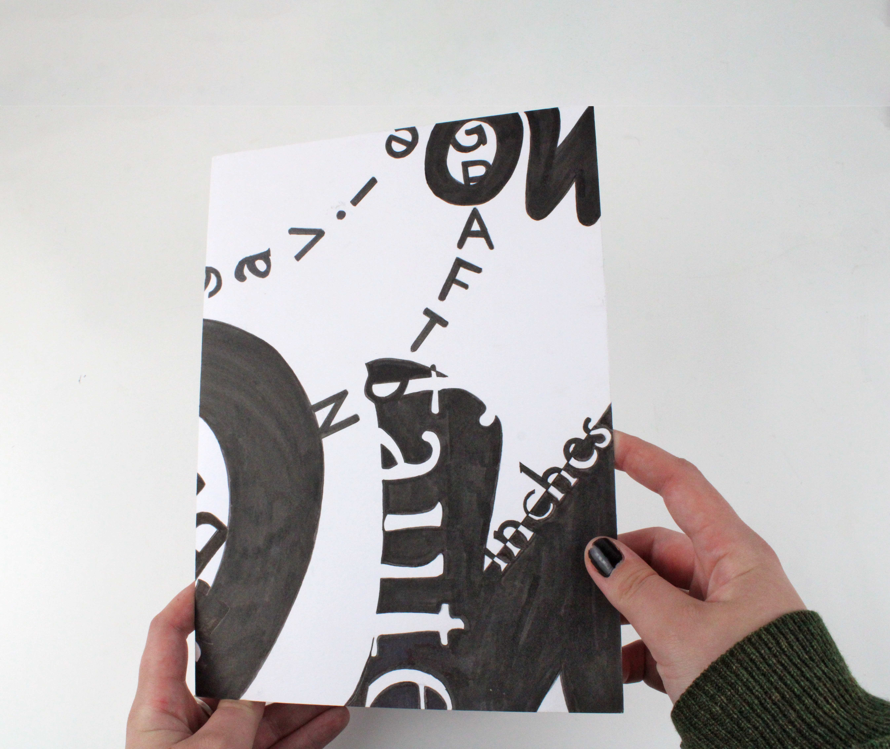
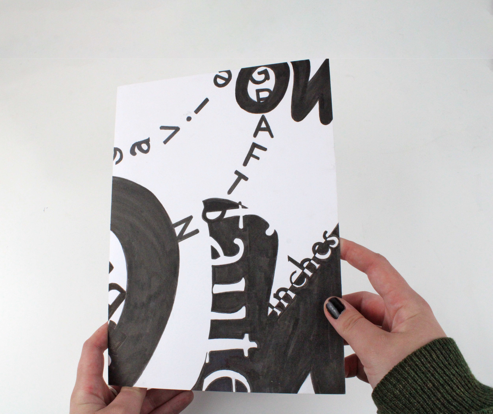

COUVERTURES
Création de cinq couvertures à la main, utilisant des feutres noirs, à partir d'une sélection de 50 mots selon un protocole spécifique. Chaque couverture est formée de 10 mots interconnectés, impliquant une composition réfléchie avec différentes intentions. Avant ces compositions variées, un travail de recherche manuelle a été entrepris, englobant la découpe, la numérisation et l'ajustement de la taille des mots.
 
